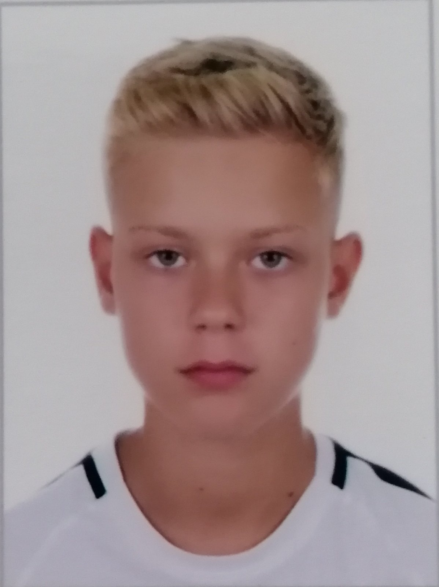
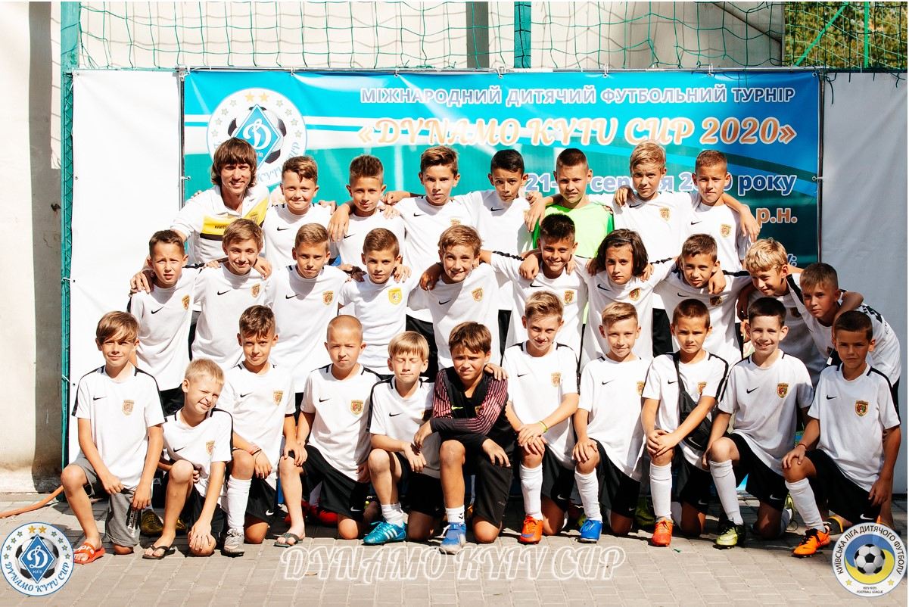

|
Повне ім’я(Full name): Главицький Андрій Анатолійович(Hlavytskyi Andrii) Дата народження(Date of birth): 22 травня(may) 2010 . Місце народженя(Place of birth): Україна(Ucraine), Чернівці(Chernivtsi) Національність(Nationality): українець(ucrainian) Зріст(Height): 156 см(cm) Вага(Weight): 40 кг(kg) Клуб(Team): Буковина Чернівці(Bucovina Chernivtsi)(2016-2021) Позиция(Position): Центральний півзахисник(Central midfielder) Номер(Number): 4 |
 |
У 2016 році у віці 6 років Андрій почав свої виступи за КБУ ДЮСШ Буковина.
З 2016 по 2019 рік він виступав на позиції цетрального захисника.
У 2019 році Андрій почав грати на позиції центрально півзахисника.
Сильні сторони Андрія на позиції цетрального півзахисника є:
За 5 років виступів у чемпіонаті ДЮФЛ та різноманітних міжобластних і міжнародних турнірах Андрій здобув значну кількість медалей та особистих
винагород різного гатунку.
Найвизначнішою на даний момент є перемога на турнірі Dynamo Cup у 2020 році, де під керівництвом Андрія Гордея Буковина
у фіналі перемогла у серії пенальті Київське Динамо.
В основний час гра завершилась з рахунком 1:1 і єдиний гол забив якраз Главицький Андрії.
Ігри за участі Андрія можна переглянути на Youtube каналі
присвяченому виступам команди Буковина 2010 р.н.
|  |